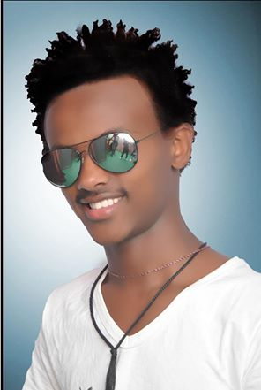
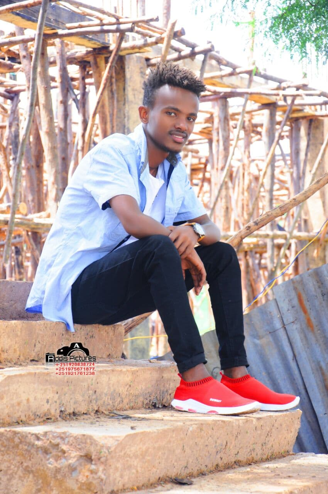

|  |  |
HI! My name is kasahun Tamiru. I am 20 years old and i was born in ambo.actually i came from another city.I have one sister and three brothers. my mom used to teach university and now, she works as analitist. i am interested in computer science,music,sport,fantasy literature. computer firts apered in my life when i was seven. I was playing it whenever i could.now i can alresdy programe in c++ and html so. listening to music is my favorite and i have always been good at sport. i like playing soccer,running and swimming. I love fantasy literatureand i read fantasy book and magazine, watch fantasy film and play role playing games in which fantasy world is used as background.my dream is to study architecture and i love every thing associated with this and i hope in my fyture i will be a designer I hate spiders. when i see spider(especiallywhen it is the big one) i feel so very small and the spider seems so huge. I dont feel scarred when i see a mouse, snake or any other animal and when i come acros a spider i think.